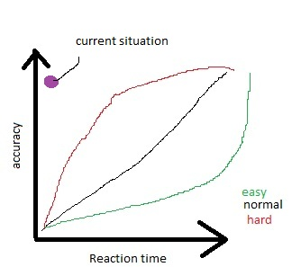

I am having the EXACT same problems.
Watched a “Let’s Play” of half-life just now, and this section is no where near as rediculous!
This desperately needs to be sorted out.
:fffuuu:
JamesKane at one point said that he took the Combine AI, scrapped most of it (because apparently the majority of it was poorly-written spaghetti code), and recoded it from scratch using fewer lines and simpler logic.
The HECU apparently does not use a great deal of actual Combine AI code, but they do share a lot of the same “behaviors”, which are shared actions between different NPC classes.
I don’t think that’s the point. I played that section like I played it in Half-Life, and it was relatively easy. Sneak/rush your way to the other side’s sewers and come up behind the tank. There, you have cover and supplies. And the tank will blind-fire at your location even if it can’t see you, so just wait for it to waste a shot and rocket-launch it while it reloads.
That doesn’t mean I agree with the difficulty of the Marines, however, nor that they’re psychic. In Half-Life, you could sneak around and enemies WOULD NOT notice you. If you’re behind an enemy, he can’t see you. If you can only see one inch of an enemy’s heel, he can’t see you. If you shoot an enemy from afar, he takes off running and takes cover.
These guys, by contrast, are frikkin’ Terminators. I show one inch of my glasses-wearing head and every soldier in the compound knows where I am because one guy near the hole saw me with the broad of his back. I break a crate 100 yards away from soldiers who couldn’t really hear me and all of a sudden they pop out and start shooting at me exactly.
Funny enough, the Half-Life soldiers were crap in terms of difficulty, but they were more dangerous than the aliens because they played smart. They took cover, they used grenades, they tried to flush you out of cover. These guys, by contrast, play like Quake III enemies on hard - they see you through walls, have impeccable aim and always react to your presence instantly.
It’s not that they’re impossible to beat. I sailed through the whole game on Normal without too much trouble. It’s that they’re ANNOYING to fight and, moreover, that the best ways to fight them are counter-intuitive. You aren’t supposed to use the automatic weapons of war which are supposedly designed for this kind of combat, and must instead rely on small arms or exotic weapons.
The section the OP mentioned is just as hard on Hard mode in Half Life. This section generally kills me about 20 times or more before I pass it. The crossbow is your best friend here. Don’t get off the ladder. Just try to hit two grunts with darts before getting below again. As for the tank, well, the easy way for that is once most of the initial grunts are dead, take the canal area (the open channel with water) to another pipe that gives you ladder access to an area with a car garage. The tank will blow out a wall, allowing you to fire through it with minimal chances of being hit back. There’s also more rocket ammunition in the car garage, and I think some suit batteries.
Last time I tried to go straight through the canal I got cut to ribbons. The marines drop explosive barrels in the canal and start pelting you with MP5 fire from above.
Going to that garage is far and above the best way to do that section, a million times easier than anything else.
I honestly have to admit that as long as I remember the garage I never have trouble with that section.
I should note the seeing through walls thing is definitely true, I witnessed it in “We’ve Got Hostiles”.
Namely, after killing all but 1 marine (in the large room before the lift), I closed the fire door and ran to get health. When I got back, the last marine was stood, perfectly in line with me, behind the door.
I shot him in the foot. He died.
Well, the problem is that the Marines are psychic, so as soon as you approach the other side’s sewers, they start tossing barrels in the water. That’s not to say it was easier in the original. There, the walls were lower so I was more easily spotted. Instead, I had to come out of a hole on the left, then crawl through a foxhole to a hole on the other side, and THEN use the sewers to reach the garage.
Fighting them head on has never seemed like an option to me.
My fights with HECU didn’t involve much strategy other than sniping or blowing them to pieces. Any time they got close, I usually ended up getting torn to pieces.
That’s not to say I didn’t like the challenge they presented, but sometimes their numbers and godly accuracy made fights untenable.
they all have multihack. aimbot, wallhack, infinite ammo…
god mode and speedhack are missing though…
it’s so frustrating sometimes.
Somebody here had a nice idea.
There is my reaction time and accuracy figure to that idea.
Every Grunt that spawns receives a random x with a corresponding y determining his accuracy and reaction time.
you could also let x and y be unrelated.
What do you think of this concept??

i see it the opposite way. all the enemies were building up to more challenging ones that you see as the game progressed, the hound eyes never should have been used past a certain point in the original i’ll admit that. but they shouldn’t have been buffed this much along with the bullsquid. both should have stayed as low level enemies
Ooo, so the graph is basically my idea but with a variant relation between X and Y depending on difficulty level…
I…LOVE IT!
If I ever got around to making a game, that’s the way I’d do it. The outliers, who focus their talents on either accuracy or reflex, wouldn’t vary much across difficulty levels… but what the difficulty setting does affect is how proficient accuracy-reflex hybrids are.
That being said, the team has in the past shown an unwillingness to create variety across difficulty levels (freezer fog, barnacles, etc.) so just a linear accuracy-reflex relationship is a more pragmatic suggestion. I still put my endorsement behind nubber’s algorithm, though, in the small chance it would be considered.
Am I the only one who likes the difficulty of Black Mesa?
EDIT:
I do think that they need to remove the soldiers sixth sense. Apart from that I liked the difficulty, though.
The grunts are way overpowered. This leads to a few problems, one you put less grunts on a map because adding more will make it too difficult. Two the aliens are canon fodder for them which ruins the story ark. Why are they bugging out after Surface Tension? because from what I’m seeing the military is totally dominating the battlefield.
Difficulty isn’t the problem. The game isn’t too difficult, especially for one with infinite quicksaves. It’s just that it’s difficulty in many annoying ways and not many entertaining ways. You can’t “outthink” the Marines because they don’t win by thinking. They win via aimbot, health pool and precognition.
Sure, the original Half-Life Marines sucked, I’ll admit, but getting flushed out of cover with grenades or getting flanked is a defeat I’ll take any day over getting out-sniped.
I personally feel that if you had marines that were half as strong, but you had more than twice the amount of marines, and even more aliens tearing the marines apart (which would bring back the balance to 2x marines that are 1/2 as strong), THEN you would REALLY get the feeling that marines are overpowered, and you are truly in the middle of a war zone between HECU and Aliens - justifying the “Forget about Freeman” chapter and the military pullout.
It would also make BMS feel more like the old school shooter that it should have been. It’s not that complicated, really.
What I remember the most about Half-Life is the fact that I felt part of a bigger storyline that didn’t focus on me, but on the struggle of the Aliens invasion. This was a great change from most FPS where everything is targeted on the player.
I don’t mean to discredit the work of the BMS team. They did an AMAZING job of remapping everything. I just wish they’d get maybe more an outside view on what made the HL1 gameplay special.
Am I the only one who found black mesa easier then hl1? I’m not saying hl1 was difficult or anything, but black mesa seemed to rework/take out the more difficult sections of hl1, and although some of the monsters were buffed, they were always nerfed too. monsters on average have much lower hp, the crowbar is much more powerful, you way more ammo then you should for the more powerful weapons, sometimes you get them much earlier too. I played on hard if anyone was wondering.
Weird, they seem to behave exactly like the combine, they even have the same little tendencies and bugs (like shooting while facing away from you). I’m assuming he didn’t scrap it, but just rewrote it to be more streamlined/easier to work with, but what do I know.
I’ve only played it on Hard because I am in love with the actual difficulty in taking the Soldiers down. It makes the Questionable Ethics Finale that
much more rewarding to blast through.
Soldiers AI using aimbots?
I can’t read past this question. Aimbots are scripts written for the sole purpose of cheating fellow players in multi play. Real Aimbots are available for most of your favorite games.
It is not possible for a NPC to use a cheat script. It is called an AI (artificial intelligence).
They are not cheating they where programmed that way.
Ok now carry on with your boohoo. Or type (~ sv_cheats 1 -god) and play like the boss you think you are.
I know what aimbots are. If you can’t read the thread contents, don’t bother posting to respond. I’m using the term aimbot for the fact that the vast majority of us agree that the accuracy and detection abilities of HECUs is absolutely irrealistic, it makes it feel like they would be using aimbots if they were human players.
Considering these are highly trained Marines, I’d expect their reactions to be fast. But being able to whip around and shoot without actually turning to face the player before firing is reminiscent of the brutal difficulty of “Tom Clancy’s Rainbow Six” on Elite difficulty.
Despite how brutal the AI is, I thought it was fun to fight against, as long as it’s not that fucking part of fucking Surface Tension that cut my framerate in half and proceeded to spam me with marines that killed me in half a second and proceeded to have their way with my bullet-riddled body about twenty times.